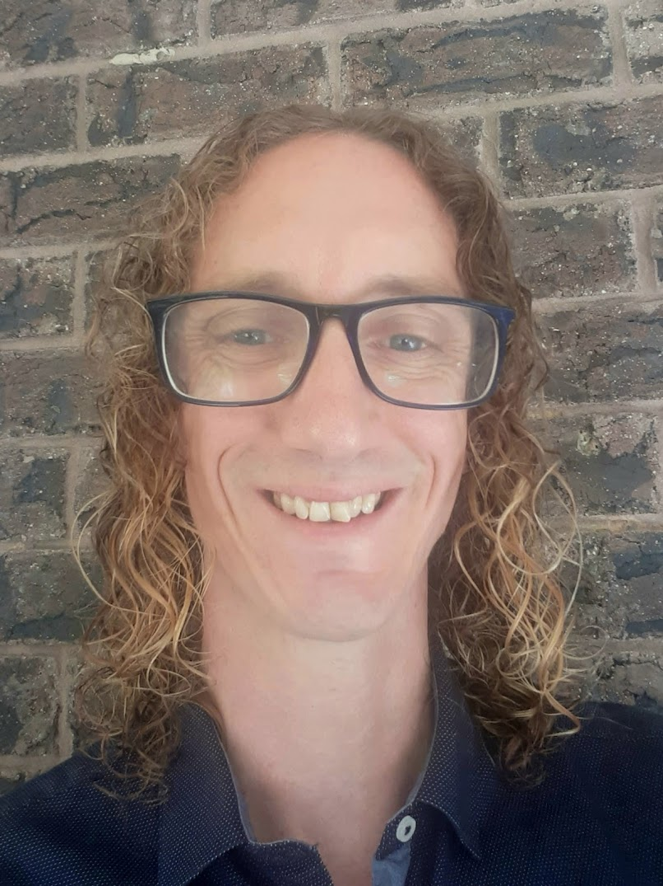
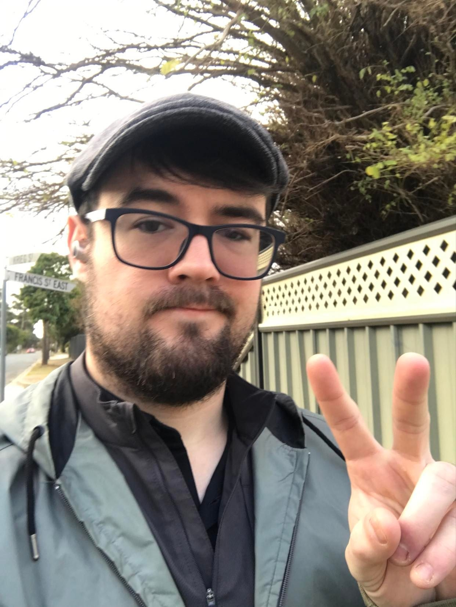
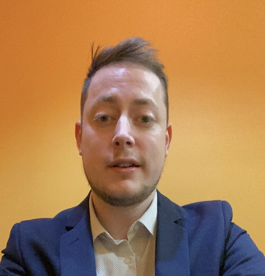

Kieran Goodwill ~ S3939981

*fill*
Personality Type


Adrian Bell ~ S3941189
I currently live in Far North Queensland with my wife and two young boys, having moved here from Northern Ireland in 2007. I enjoy spending my free time in the outdoors, and have a particular interest in nature photography. Although I have always had an interest in computers I do not have a professional background in I.T. I have undertaken this course out of personal interest and to move into the IT profession in the future, possibly as a systems administrator or similar.
Personality Type


Angelo Connor ~ S3939995

I am a big fan of the English Premier League football team Chelsea FC and currently a long-time OSRS player. I currently work as a Service Desk Officer for a HR Company and looking to further develop my career into my preferred area which is Networking and/or Systems Administration.
My interest in IT is mainly focused on Network/data management. I enjoy problem solving and being able to troubleshoot issues and get that ‘ah ha’ feeling when I find the solution/fix.
Being able to automate programs and databases, as well as monitor, maintain network systems, as well as database management is one of my passions for IT. Looking learn alot from being a K.A.A.L.A.B team member, Bright future ahead!.
Personality Type


Luca Pallas ~ S3940012

My name is Luca Pallas and I’m Australian with my Dad being English and my Mum Italian. Besides this course, I have studied one unit of coding (C++) at university previously and more recently completed a Certificate IV in Programming (C#, Java, SQL, .NET).
My pastimes are watching shows with my partner, fiddling around with my guitar and bass and playing videogames (Skyrim currently). I’ve also recently become a father to a beautiful baby boy, who is almost 3 months old, so have been enjoying watching him grow and learn new things. I'm enjoying being the 'L' in K.A.A.L.A.B and think we're going to do quie well together.
Personality Type


Aidan Fox ~ S3956717
I'm a Rural boy who grew into computing to keep touch with the world, my Hobbies are exploring new genres of Music, Combat Flight Simulators, Virtual Reality and designing gaming PC’s for friends. I'm passionate about IT and want to learn everything I can so that I can keep what I've learned current. My experience with IT starts and stops at the consumer level however I’ve played at being a support technician long enough for the gap between the mask and me to become hard to see. I'm part of team K.A.A.L.A.B and I hope that I can use some of the skills I taught myself from some of my lesser defining hobbies to really prove myself.
Personality Type
Bryan Wedding ~ S3956714

Born in Queensland and now residing in the Barossa Valley, South Australia. Worked as a Corporate Banking Professional for 5 years and am now pursuing to develop in IT to hopefully enter a career within the industry.
The change to a career in IT was founded from a childhood interest in computing, Basic HTML and Web-Design. Due to lack of professional skills, I am hoping to further skills as a member of the K.A.A.L.A.B Team and have it potentially lead to a career in Software Engineering & Development.